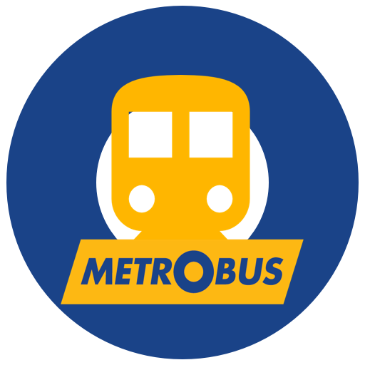

<ion-view view-title="MetroBus App">
    <div class="row geolocation-row">
      <div class="col col-75">
        
      </div>
      <div class="col col-center">
        <button class="geolocation-button button button-block button-positive" ng-click="tryGeoLocation()">
          My Location
        </button>
      </div>
    </div>

    <ion-tabs class="tabs-energized tabs-icon-top">
        <ion-tab title="Home" icon="ion-home" ui-sref="home.this">
            <ion-nav-view name="tab-leagues"></ion-nav-view>
        </ion-tab>
        <ion-tab title="Navigate" icon="ion-compass" ui-sref="home.this">
            <ion-nav-view name="tab-leagues"></ion-nav-view>
        </ion-tab>
        <ion-tab title="Home" icon="ion-settings" ui-sref="home.this">
            <ion-nav-view name="tab-leagues"></ion-nav-view>
        </ion-tab>
    </ion-tabs>
</ion-view>